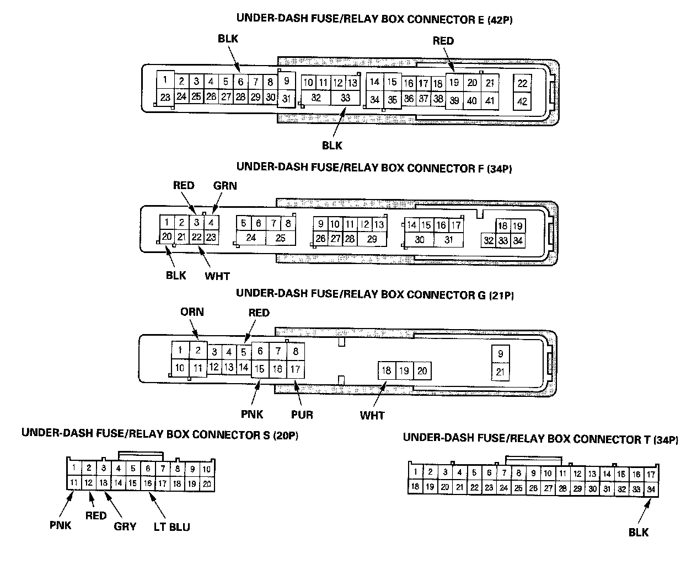
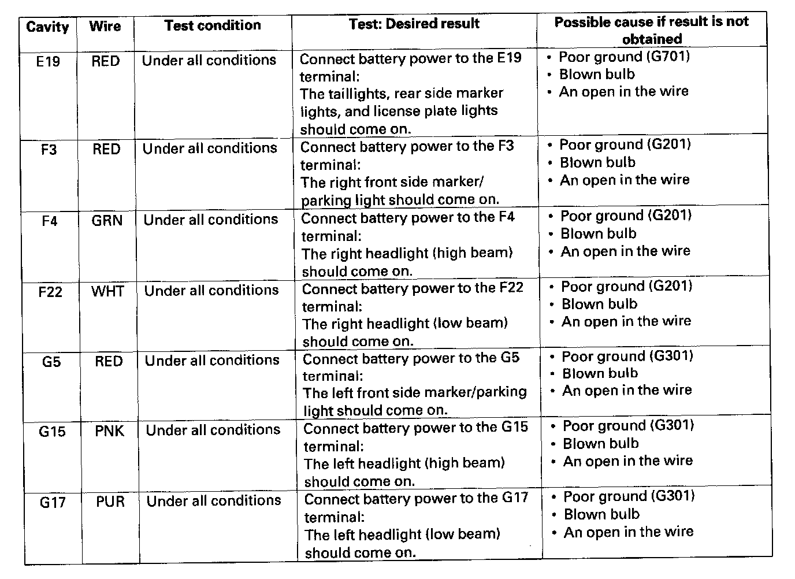
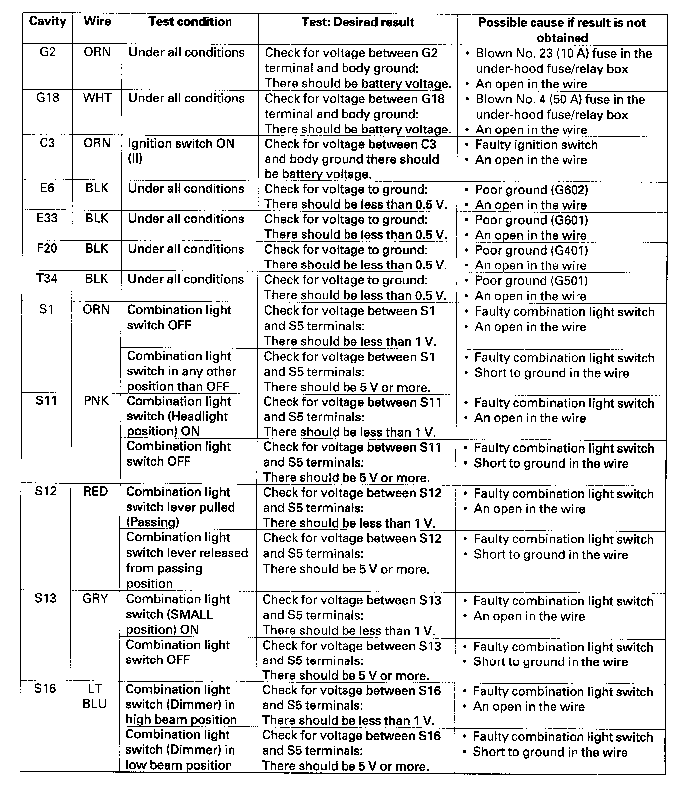

MICU Input Test
MICU Input TestNOTE:
- The MICU turns on the headlights (high beams) in a dimming mode for the Daytime Running Lights under the following conditions:
- With the ignition switch ON (II)
- The headlight switch OFF
- The parking brake is released (parking brake switch OFF)
- The DRL indicator will come when one of the headlight (high beams) bulbs is blown, or if the high beam wiring has an open circuit with the daytime running lights ON.
- For Canada models: If the vehicle is equipped with an optional remote control engine start system, the daytime running lights will not function when started with the remote start.
1. Before troubleshooting the lighting system, troubleshoot the B-CAN System Diagnosis Test Mode A.
2. Check the No. 12 (10 A), No. 13 (10 A), No. 15 (7.5 A), No. 16 (10 A), No. 17 (10 A), No. 18 (20 A), No. 19 (15 A), and No. 21 (20 A), and No. 37 (7.5 A) fuses in the under-dash fuse/relay box. If any fuse is blown, replace it and go to step 3.

3. Disconnect the under-dash fuse/relay box connectors E, F, G, S, and I.
NOTE: All connector views are shown from wire side of female terminals.
4. Inspect the connector and socket terminals to be sure they are all making good contact.
- If the terminals are bent, loose or corroded, repair them as necessary and recheck the system.
- If the terminals look OK, go to step 5.

5. With the connector still disconnected, make these input tests at the appropriate connector.
- If any test indicates a problem, find and correct the cause, then recheck the system.
- If all the input tests prove OK, go to step 6.

6. Reconnect the connectors to the under-dash fuse/relay box, and make these input tests at the connectors.
- If any test indicates a problem, find and correct the cause, then recheck the system.
- If all the input tests prove OK, the MICU must be faulty; replace the under-dash fuse/relay box.